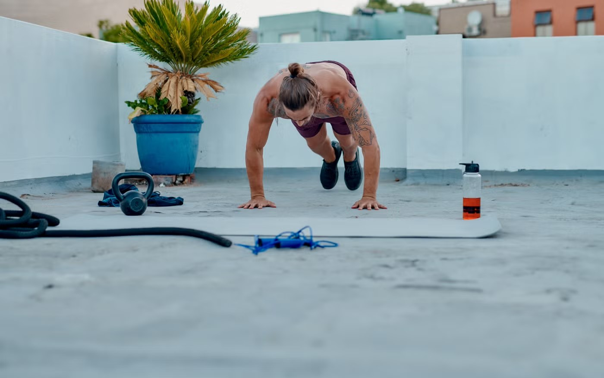
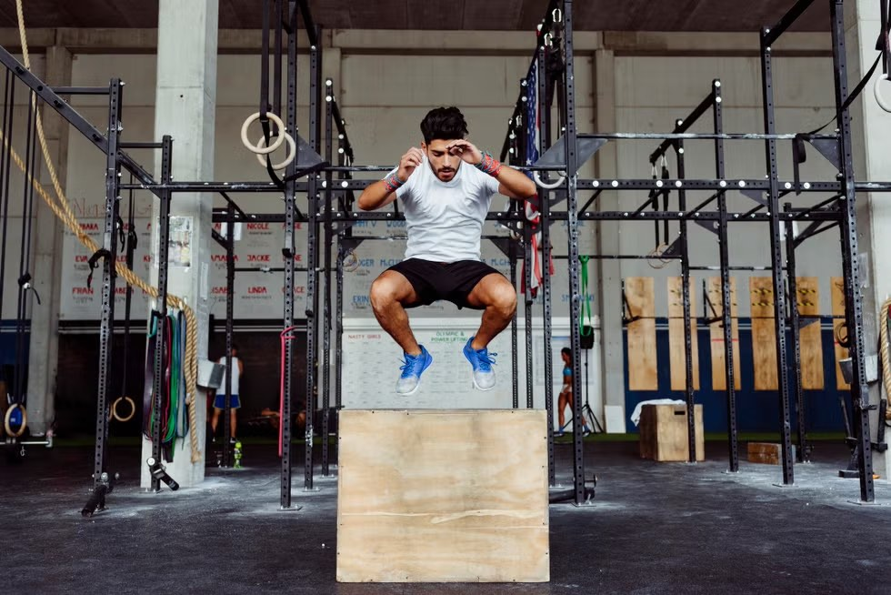

Высокоинтенсивные интервальные тренировки (HIIT)
Высокоинтенсивные интервальные тренировки — один из самых эффективных способов сжечь жир и улучшить выносливость. Используй наш таймер для интервальных тренировок и интервальный таймер онлайн для эффективных HIIT-сессий. Всё, что нужно знать о HIIT!

Что такое HIIT?
HIIT (High-Intensity Interval Training) — это высокоинтенсивные интервальные тренировки, которые чередуют короткие периоды максимальной нагрузки с периодами активного или пассивного отдыха.
В отличие от табаты, которая имеет строгий протокол (20/10), HIIT более гибкий. Ты можешь настроить интервалы под себя: 30/30, 40/20, 60/30 и так далее.
Основные принципы HIIT
- Высокая интенсивность: Работа на 80-95% от максимального пульса
- Короткие интервалы: От 20 секунд до 2 минут работы
- Активный отдых: От 10 секунд до 2 минут восстановления
- Общая длительность: Обычно 15-30 минут (включая разминку и заминку)
Польза HIIT тренировок
1. Максимальное сжигание калорий
За 20 минут HIIT ты сжигаешь столько же калорий, сколько за 40-60 минут обычного кардио. Эффект "дожигания" (EPOC) продолжается до 24 часов!
2. Улучшение сердечно-сосудистой системы
HIIT тренирует сердце эффективнее, чем длительное кардио. Улучшается VO2 max (максимальное потребление кислорода).
3. Сохранение мышечной массы
В отличие от длительного кардио, HIIT помогает сохранить и даже нарастить мышцы, особенно если использовать силовые упражнения.
4. Экономия времени
Полная тренировка занимает 20-30 минут, но эффект как от часовой кардио-сессии!
5. Ускорение метаболизма
После HIIT твой метаболизм остаётся повышенным до 24 часов. Ты продолжаешь сжигать калории даже после тренировки!
Типы интервальных тренировок
Круговые интервальные тренировки
Круговые интервальные тренировки — это тип интервальной тренировки, где ты выполняешь серию упражнений по кругу, переходя от одного к другому с минимальным отдыхом. Каждый круг повторяется несколько раз.
Это отличный способ проработать всё тело за короткое время. Используй наш таймер для интервальных тренировок, чтобы настроить интервалы работы и отдыха для каждого упражнения в круге.
Пример круговой интервальной тренировки:
- Круг 1: Приседания (30 сек) → Отжимания (30 сек) → Планка (30 сек) → Отдых (30 сек)
- Повторить: 4-5 кругов
- Общее время: 12-15 минут
Интервальные тренировки для бега
Интервальные тренировки для бега — это чередование быстрого бега (спринта) с медленным бегом или ходьбой. Такой подход помогает улучшить скорость, выносливость и сжечь больше калорий, чем равномерный бег.
Наш интервальный таймер онлайн идеально подходит для беговых интервалов. Настрой интервалы работы и отдыха, и таймер будет подсказывать, когда бежать быстро, а когда восстанавливаться.
Пример интервальной тренировки для бега:
- Разминка: 5 минут легкого бега
- Интервалы: Быстрый бег (1 мин) → Медленный бег (2 мин)
- Повторить: 8-10 интервалов
- Заминка: 5 минут легкого бега
- Общее время: 25-30 минут
Повторные интервальные тренировки
Повторные интервальные тренировки — это выполнение одного и того же упражнения несколько раз с периодами отдыха между подходами. Это классический подход для развития силы и выносливости в конкретном упражнении.
Идеально подходит для отработки техники и прогресса в конкретных упражнениях. Используй наш таймер для интервальных тренировок для точного контроля времени работы и отдыха.
Пример повторной интервальной тренировки:
- Упражнение: Бёрпи
- Работа: 20 секунд максимальной интенсивности
- Отдых: 40 секунд
- Повторить: 10 подходов
- Общее время: 10 минут
💡 Совет: Все эти типы интервальных тренировок можно выполнять с нашим интервальным таймером онлайн. Просто выбери режим HIIT, настрой интервалы под себя и начинай тренировку!
Примеры HIIT тренировок
Для начинающих (20 минут)
- Разминка: 5 минут
- Работа: 30 секунд
- Отдых: 60 секунд
- Повторить: 8 интервалов
- Заминка: 5 минут
Упражнения: Приседания, отжимания (с коленей), планка, jumping jacks
Для среднего уровня (25 минут)
- Разминка: 5 минут
- Работа: 40 секунд
- Отдых: 40 секунд
- Повторить: 10 интервалов
- Заминка: 5 минут
Упражнения: Бёрпи, приседания с прыжком, отжимания, горные альпинисты
Для продвинутых (30 минут)
- Разминка: 5 минут
- Работа: 60 секунд
- Отдых: 30 секунд
- Повторить: 12 интервалов
- Заминка: 5 минут
Упражнения: Бёрпи с отжиманием, махи гирей, battle rope, box jumps
Как использовать HIIT таймер
В нашем таймере есть готовые программы HIIT для разных уровней подготовки:
- Перейди на главную страницу таймера
- Выбери режим "HIIT"
- Нажми кнопку "ТРЕНИРОВКИ"
- Выбери уровень: Начинающий, Средний или Продвинутый
- Выбери готовую программу или создай свою
- Нажми "Старт" и тренируйся!
В нашем таймере доступно 30 готовых HIIT программ (по 10 для каждого уровня). Все программы проверены и эффективны!
Важные правила безопасности
- Всегда делай разминку перед тренировкой (5-10 минут)
- Начинай с малого: Не пытайся сразу делать максимальную интенсивность
- Следи за техникой: Лучше медленнее, но правильно
- Пей воду: Держи бутылку рядом
- Не тренируйся каждый день: Давай организму восстановиться (3-4 раза в неделю)
- При недомогании — остановись: Никакая тренировка не стоит здоровья
⚠️ Противопоказания: Проблемы с сердцем, гипертония, травмы суставов, беременность. Перед началом тренировок проконсультируйся с врачом!
Готов попробовать HIIT?
Запусти наш HIIT таймер и выбери готовую программу для своего уровня. Это бесплатно и работает без регистрации!
Запустить HIIT таймер